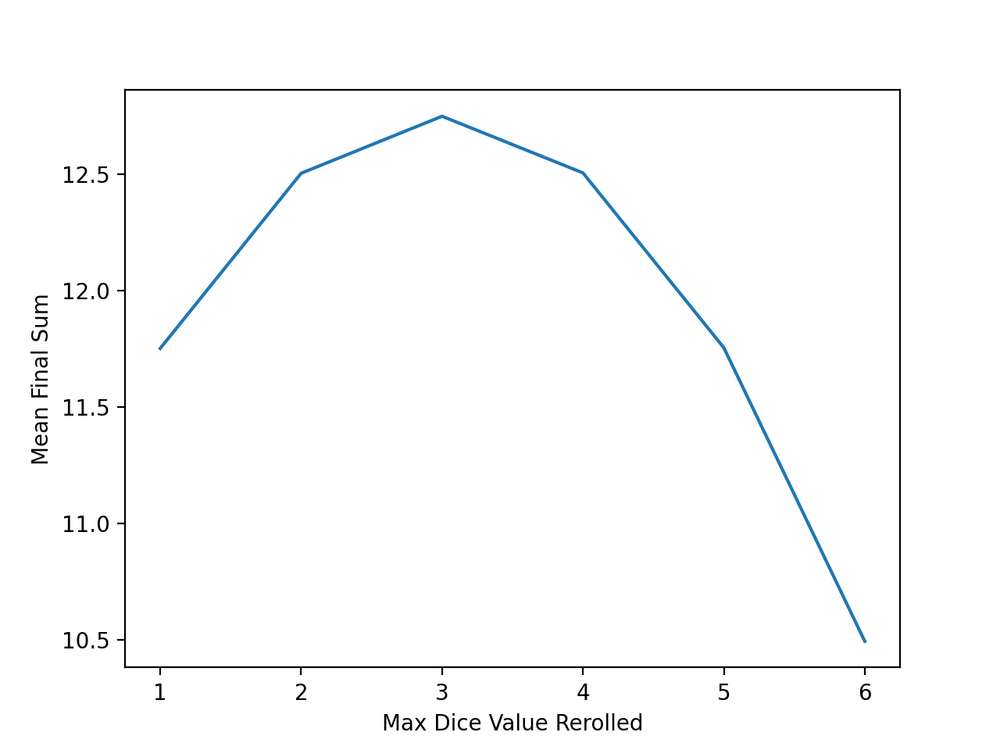
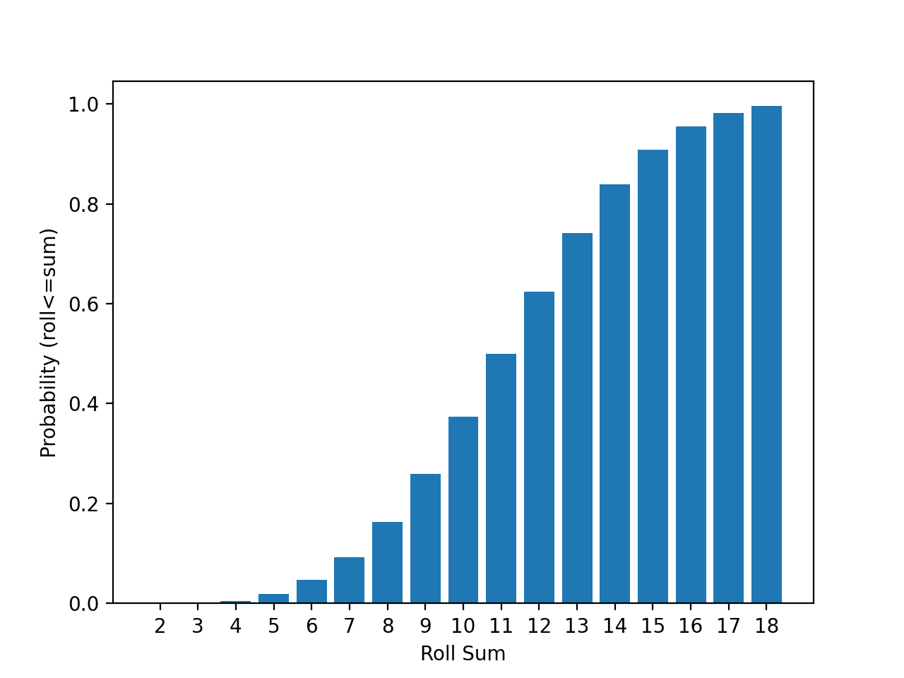
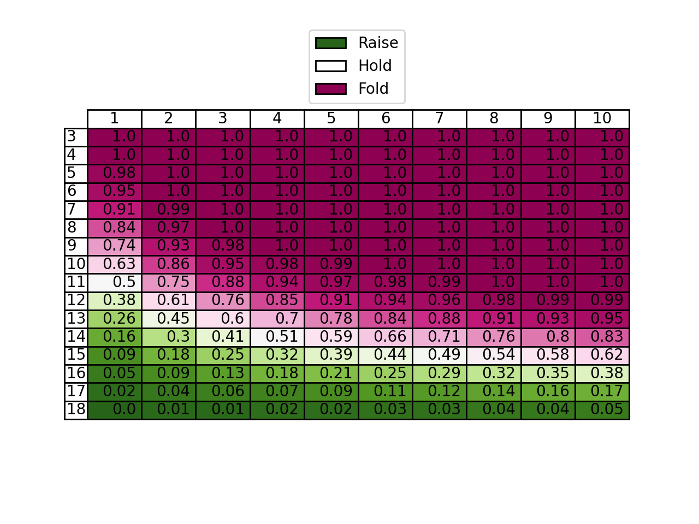

<!DOCTYPE html>
<html>
<head>
    <link rel="preconnect" href="https://fonts.googleapis.com">
    <link rel="preconnect" href="https://fonts.gstatic.com" crossorigin>
    <link href="https://fonts.googleapis.com/css2?family=Bitter:wght@400;900&family=Roboto:wght@100&display=swap" rel="stylesheet">
    <link rel="stylesheet" href="../style.css">
    <title>Noah's Blog</title>
</head>
<body>
<h1 id="title" style="text-align: center; margin-top: 1cm;"></h1>
<h2 id="author" style="text-align: center; font-weight: normal;"></h2>
<p id="date" style="text-align: center; font-weight: normal;"></p>
<div class="text" id="main">
</div>
</body>
<script>
//define and insert text & metadata
var temp = `Over Analyzing Dice Poker
Noah Liguori-Bills
7/22/25


Dice poker is a simple game played in four steps:
1. Each player places a bet
2. Each player rolls three six sided dice (3d6)
3. Each player can choose to raise, fold, or hold their bet
4. Each player rerolls any of their own dice, then the player with the highest sum takes everyone’s bets


I have done some thinking about the optimal strategy and I am forcing you to read about my findings so I don’t have to delete them and feel like I wasted my time.


Every dice poker player’s "strategy" actually just consists of just two choices: choosing how to change your bet in step 3, and which dice to reroll in step 4.


Let’s start with step 4. Our strategy here is really just choosing a single number that represents the maximum dice value we are willing to reroll. If our number is low, say 2, then we have a high chance of rerolling a higher number (4/6), but there will be fewer dice that we are willing to reroll. So as our number increases, the expected benefit of rerolling decreases, but the average number of opportunities to reroll increases. Taking this all into account, we want to find the number with the maximum expected final reroll sum. I didn’t want to prove this, so I wrote python code instead (1).





These results show that rerolling dice showing a 3 or lower gives the highest average sum of 12.7. Surprisingly to me, both 2 and 4 had similar results of 12.5. I thought that 4 would have been much worse because there is only a 1/3 chance of rerolling higher than a 4, but I guess the increased rolling opportunities balance it to 2’s level. I’m interested to hear if anyone has further insight into this or a proof.


Now for step 3. Since I already had code to simulate rolls, I created this cumulative distribution function (CDF) for each roll sum.





The only mathematical insight I’ve had during all of this analysis is that this CDF is missing a key variable: the number of opponents. As the number of opponents increases, the chance that one of your opponents has a low probability sum increases. Specifically, the chance “p_n” that at least one of your opponents has a sum with probability “p” given “n” opponents is


Like a good mathematician I have proved this to myself by example. Let me know if you know what this relationship is actually called. With this in mind we can calculate p_n based on the probabilities from the CDF, and we get this table where the number of opponents are shown in the columns, your step 2 sum is shown in the rows, and the probability that one opponent has a higher sum is shown in the cells.





So if you just memorize these 160 numbers and reroll all 3’s and lower, you will be an optimal dice poker player!


References:

1. https://github.com/noahlb123/dice-poker-analysis
`
var text, title;
[title, text] = temp.split(/\n(.*)/s);
[author, text] = text.split(/\n(.*)/s);
[date, text] = text.split(/\n(.*)/s);
document.getElementById('title').innerHTML = title;
document.getElementById('author').innerHTML = author;
document.getElementById('date').innerHTML = date;
document.querySelector('title').innerHTML = title;

//insert each text line as p elm
parentElm = document.getElementById('main');
text.split('\n').forEach(textLine => {
    let p = document.createElement("p");
    p.innerHTML = textLine == '' ? '\n': textLine;
    parentElm.appendChild(p);
});
</script>
</html>
